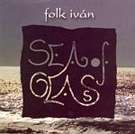

| Artist: | Folk Iván |
| Title: | Sea Of Glass |
| Label: | self produced |
| Length(s): | 50 minutes |
| Year(s) of release: | 2002 |
| Month of review: | [05/2003] |
| 1) | All In Mirror | 6.55 |
| 2) | Babel | 5.30 |
| 3) | Cheater | 5.28 |
| 4) | Book Of Esther | 4.43 |
| 5) | Four Moments | 1.19 |
| 6) | As Flashes Of Fire | 7.20 |
| 7) | Turning Burning | 6.10 |
| 8) | Sea Of Glass | 6.58 |
| 9) | My Feast | 5.27 |
Babel opens with clear percussion. The guitar work again reminds a bit of King Crimson, plenty of repetitive patterning there, but the music is much folkier and lighter. The violin is strongly present here, playing against the soprano sax and the strong percussion. In addition to the folkiness, there is also something jazzy about the music, but it is never prominent. Maybe it is just the soprano sax. The song is a meandering one, but all brought with a certain light frivolity, yet never empty headed. It seems to me that all of this has been carefully worked, the way things blend in.
On Cheater, the music is filled with treated guitar, making for a darker sound. Again, everything is fine in the melody department. Book Of Esther is a more moody track with slow lines on the violin and the soprano sax meddling in with some more moody tunes. Again, the song is well-crafted with good interplay. On the other hand the music does have a tameness over it, that not all of you may like.
Four Moments is a short guitar intermezzo, but a very good one. The melody is subtle and expressive. This is something that any Camel fan ought to appreciate. With As Flashes Of Fire we continue on the second half of the album. Here we find some vocalization against the backdrop of percussion and acoustic guitar. Well sung, this is again a subtle track with some good melodies.
On Turning Burning the King Crimson influence comes out strongest, accompanied by various drilling sounds and the help of a more manic soprano sax. The music of KC from the Discipline era gets a slightly different treatment in this fashion, letting something new emerge. But the guitar sound is unmistakable. Later the horn section becomes more improvised sounding.
The title track starts off with easy-going acoustic guitar and a bit of violin shining through. I am reminded here of Darryl Way in his Curved Air period, without the kick-ass side of him that is. This is more a romantic ballad of some kind. Closer My Feast is a rather up-beat affair, indeed quite festive. It cojntains meandering sax solo's, plenty of percussion and even some sung vocals. A bit frolic this one.